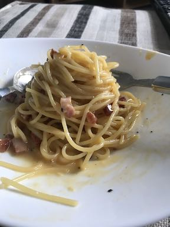

Carbonara
I know that most recipe websites have long winded descriotions of what the food they are making evokes for them and also how they cam across the food but I mean....it's carbonara. I didn't invent it I just really like it
How to make a carbonara that will improve your life 20% of the time
Ingredients
- 1 egg and two egg yolk
- 90grams of pancetta
- 75grams Parmesan
- Pasta (I thought this would be a given but it is best to include I guess)
- Salt and Pepper
- Put a large saucepan of water on to boil.
- Finely Chop Panchetta
- seperate 2 egg yolks from the egg white. (If you do not know how to do this Click Here)
- Beat the egg yolks and eggs in a bowl, grate the Parmesan into the bowl and mix together
- When the water is boiling add pasta and add salt
- Heat up a frying pan on high heat on your hob
- Once Hot add a tea spoon of oil
- Add the pancetta and fry until Crispy
- When the pasta has finished cooking add one table spoon of pasta water to the egg and cheese mixture from earlier
- Drain the rest of the pasta through a colinder and then pour the drained pasta onto the pancetta
- Pour the egg and cheese mixture and mix together until the pasta is evenly coated. (The heat from the pan and the pasta will be enough to cook the eggs and melt the cheese)
- Season with extra cheese, salt and or pepper (if you're feeling adventurous)
Once completed you should have some life improving goodness in the form of carbs and fats

Home Page